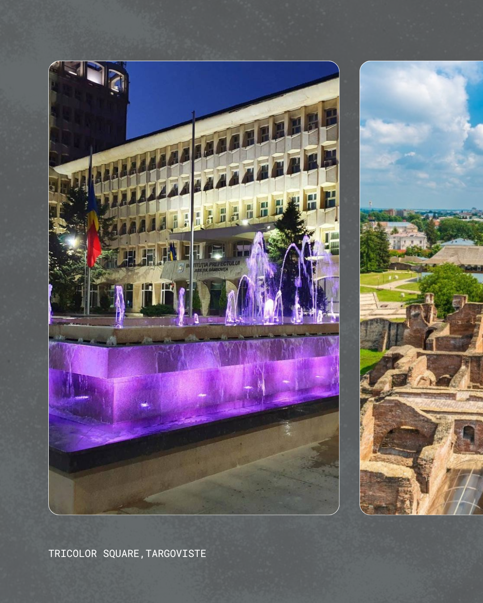
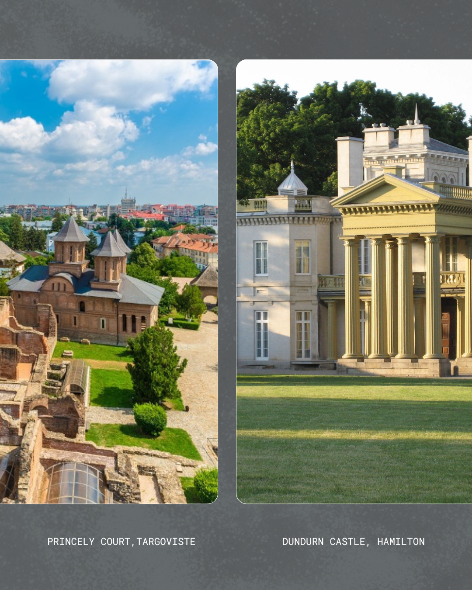
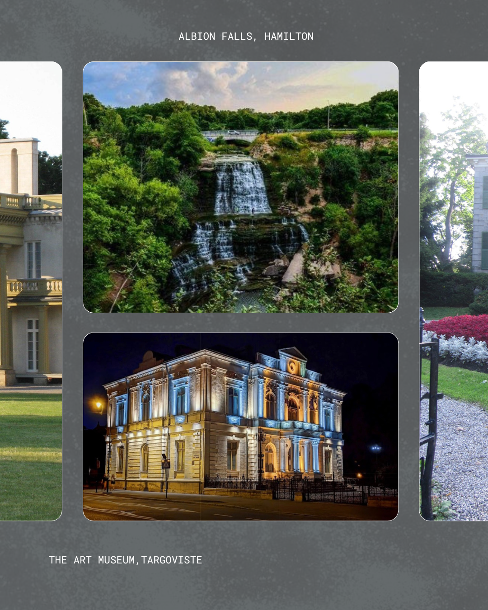
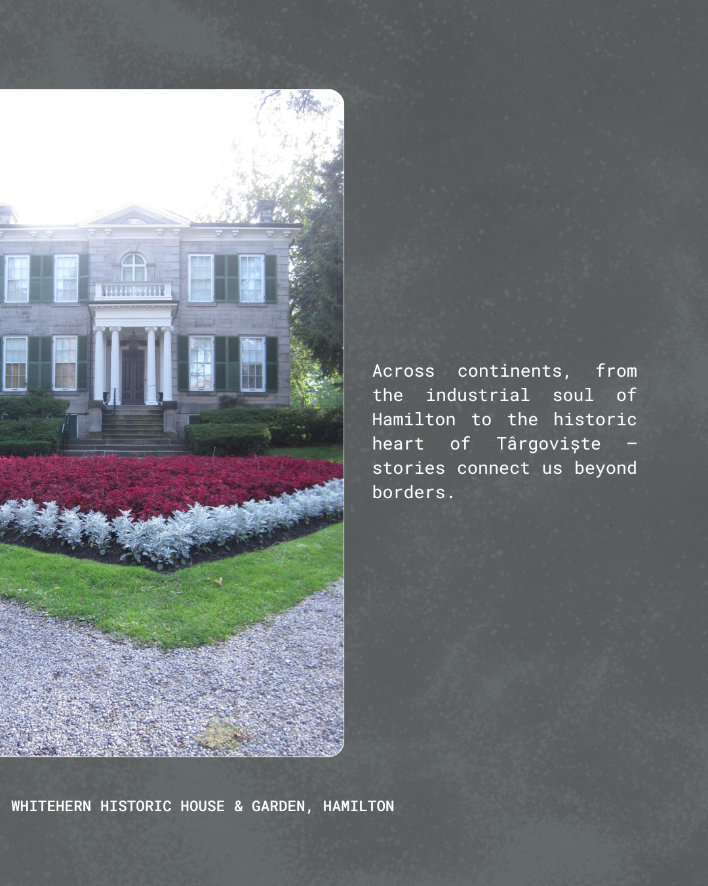

Who We Are: Voices from Our Communities
Explore the communities, culture, and stories of Hamilton, Canada, and Târgoviște, Romania.
Explore the communities, culture, and stories of Hamilton, Canada, and Târgoviște, Romania.

Hamilton is a city with a rich industrial history, historically known as the “Steel Capital” of Canada. Its economy has long been centered on manufacturing and service industries, shaping a strong working-class identity. Today, Hamilton is a diverse and multicultural city, home to numerous universities and colleges that contribute to a vibrant student community. The city is known for its parks, cultural festivals, local events, and active community life, offering a mix of urban energy and natural beauty. With its larger population, Hamilton has a dynamic, bustling atmosphere where industry, education, and culture intersect.

Târgoviște is a city steeped in history, once serving as the medieval capital of Wallachia. Its historic sites, such as the Princely Court, reflect its rich cultural heritage. Compared to Hamilton, Târgoviște is smaller, with a quieter, close-knit community where local traditions play an important role in everyday life. The city hosts universities and colleges, supporting a thoughtful and engaged student community. Life in Târgoviște is more relaxed, with parks, local events, and cultural activities that emphasize heritage and local connections. Its economy is smaller and more locally focused, reflecting the city’s intimate scale and historical identity.
Hamilton is celebrated for its multicultural population, which brings together a wide variety of cultural influences, traditions, and artistic expressions. The city hosts numerous festivals, art exhibitions, and street art initiatives that reflect its diverse communities. Local theaters, galleries, and music venues contribute to a vibrant creative scene, where both residents and students participate in cultural life. Târgoviște, on the other hand, highlights its local traditions and historical art forms. Folk art, historical architecture, and cultural heritage are central to the city’s identity, with local artists and community programs preserving and celebrating these traditions. While smaller in scale than Hamilton, Târgoviște fosters creativity that is deeply connected to its historical roots and communal lifestyle. Both cities demonstrate that art and culture are key expressions of community identity, even when the scale and style differ.

The Art Museum of Târgoviște highlights traditional Romanian art and cultural heritage.

The Art Gallery of Hamilton reflects a diverse and modern creative community.
Media representations often tell only part of the story for both cities. Hamilton is sometimes portrayed as struggling with industrial decline or urban challenges, but in reality, it is a city full of cultural vibrancy, educational opportunities, and thriving community life. The arts, festivals, and student engagement reveal a dynamic side that contrasts with negative stereotypes. Similarly, Târgoviște is often depicted as a quiet, historical city, focused mainly on its past. While history is an essential part of its identity, the city today also has a lively local community, with events, educational programs, and daily life that go beyond its historical image. In both cases, the lived experience of residents is richer and more nuanced than what media portrayals suggest, highlighting the importance of hearing the voices of the community themselves.
Community Voices Series
Local Voices & Stories



